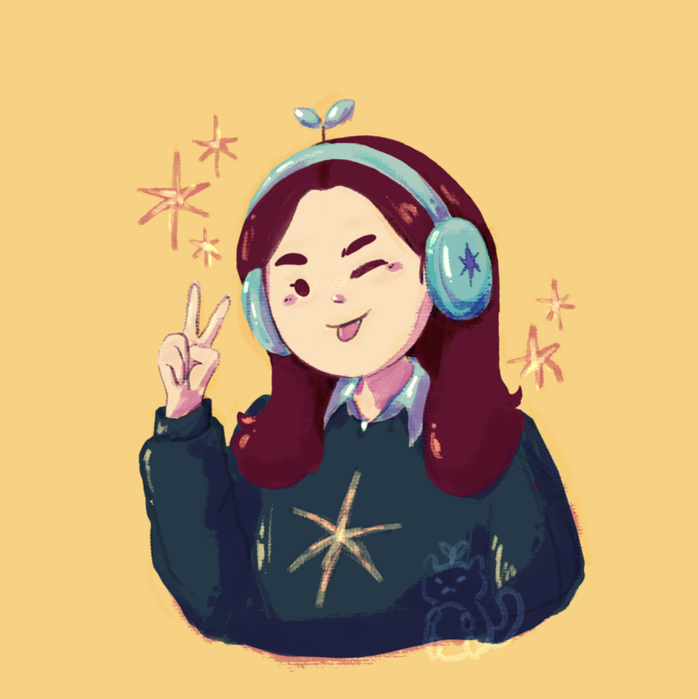

I'm a third-year student at SJSU working towards my BFA in Digital Media Art. Though my current focus is digital animation and illustration, I hope to expand into other disciplines, such as photography and 3D modeling. I'm a San Jose-based digital media artist that focuses on digital illustrations, animations, and traditional paintings. With my digital artworks, I aim to depict and explore the struggles of living with mental illnesses and the power of one’s own inner feelings. In addition, I have completed a few 3D modeling projects. Recently, I have found great interest in photography and editing. Through my photography series, I wish to capture her perspective on life and life experiences. As a whole, my works of different mediums vary from lighter pieces of vibrant illustrations to deeper themes of mental illness and emotions.
Email me at tracy.kyaw@sjsu.edu
DM me on Instagram! @luckycat_studios
Explore Projects